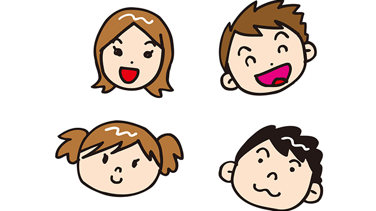

かつて私が学生のころ、ある高名な老教授の講義を受ける機会がありました。
ある日、その老教授が授業中にふとこんな言葉を漏らしたことがあります。
「私が人生でもっとも悲しかったこと。それは山で息子を失くしたとき。もう１つは大学を卒業したが自分には何の実力もないと知ったとき・・・」
そう言ったのです。私は衝撃を受けました。
というのも彼は続けてこう言ったからです。
「息子の死は悲しかったが、しょせんは他人であります。私にとっては自分のこと、自分の実力のなさのほうがずっと悲しかったのです。」
そう。彼は大学を出たばかりの若き日に、まだ自分にはそれに見合う実力がついていないことを自覚したときが人生で１番悲しかったと話したのです。
それは学究の徒として正直な気持ちだったのでしょう。
私が衝撃を受けたのは、だから息子の死より学問的実力がないことを悲しんだからではなく彼の発した「息子といえどしょせん他人」という言葉にありました。
我が子といえどしょせんは他人
この言葉は長く私の記憶に留まり続け、何かの折りにふと思い出すほどに深く印象に残ったのです。
子どもの人生に介入しない
私たちは一般に家族とりわけ親子の絆は強いものと考えて暮らしています。
一生親子の縁を切ることはできないからです。
親にとって子は宝でありもっとも愛すべき大切な存在です。だから子どもに先立たれることは親にとって人生最大の悲劇といってよいでしょう。
それならあの老教授はどうして「しょせんは他人」などと言ったのでしょう。冷たい言い方ではないでしょうか。
事実私も思い出すたびそう感じたこともあります。
しかし今ではそうではなかった、冷たい人だから「他人」と言ったのではなく単に「事実」を述べただけだと思っています。
いや、もっと深い意味があったのかもしれません。
その事実とは以下の2つ。
１つは、親子といえど別人格であり別の個体だということ。親は子ではないし、子も親ではないといういわば客観的事実。
もう１つは、親も子もそれぞれの人生を生きており影響し合いながらも、互いに決定的に干渉することはできないという事実。
これらは当たり前の「事実」なのですが見逃しがちではないでしょうか。
特に後のほうの「事実」は、頭では理解していても親はつい無意識に子どもの人生に干渉しコントロールしがちです。
子どもが小さいうちはある程度の介入は当然ですが、大きくなっても「進路」「就職先」ひいては「結婚相手」にまでも口出しするとなると過干渉と言わざるを得ません。
親は子供のためと称して過度の介入をしがちなのです。
親に親の人生があるように子どもにも子どもの人生があります。子どもが1人前になるまでには親が世話を焼いたり、しつけたりと教育的に援助する必要はもちろんあります。
しかしその領域は思春期を境にせばめていくことが望ましく、親はそのコントロール欲求を手放していかなければなりません。
しかし多くの親は一定ラインを超えて介入し続けています。
「子どもが心配だから」
「子供の将来を誤らせたくないから」
「ちゃんとした人間に育てないといけないから」
こういう思いにとらわれている限り、子どもが自分の責任で人生を切り開いていく自立性をむしばんでいることに気づいていません。
親から自立できにくい子は、大人になってからいくつかの共通点をもつようになります。
依存性が強い。承認欲求が強い。言われたことしかできない。創造性が弱い。逆境に弱い・・・など。
いずれも親が先回りしてアレコレ誘導した結果といえます。
わが子といえど他人である
この言葉は子どもの人生は子ども自身のものであり、その人生を逞しく生きていくために、親がどうあるべきかのヒントとなるでしょう。
愛と執着は紙一重
私たちはどうしても我が子を「特別な存在」と見てしまいます。血のつながった関係、お腹を痛めて産み育てた記憶、そして親としての責任感、これらが絡み合う肉親としての情愛。
それは生物学的本能－自らの遺伝子を残そうとする欲求－でもある以上なかなか子どもを突き放して見ることは難しいのです。
我が子が特別なのは当たり前なのです。
しかし人間だけが子どもを一定のラインを超えてまで庇護しようとする。
人間だけが一生子どもを「子ども」として見ようとする。
彼（彼女）は私の子だと。
個人的な話で恐縮ですが私には88歳になる母がいます。先日「折り入って頼みたいことがある」と言われ、私は何事かと少し緊張して母と向き合いました。
「お願いなんだけど・・・」と切り出して言うには、私から私の弟（次男）に「もっと野菜を食べるように忠告して欲しい」と言うのです。
私はア然としました。私の弟は60歳になろうというオッサンです。そのオッサンに野菜を食べろと？それが母の「お願い」であると？
「だってあの子、肉ばっかりで野菜をとろうとしないんだよ。栄養が片寄るし・・・」
子どもか！？
そうなのです。60になっても母にとっては息子は息子なのです。私の子どもであるのでしょう。
これを聞いて母の愛を感ずる人もいるでしょう。
母の愛は偉大なるものだと。
一方、子への執着と感じる人もいるでしょう。
いつまで子どもを握って放さないのかと。
私はどちらかというと後者の印象を持ちます。
「野菜を食べろ」ならまだ罪は重くないけどもっと深刻な例はたくさんあるからです。
親はふつうに子どもを育てているつもりでも大小さまざまな影響を子どもに及ぼし続けます。子どもはその影響から免れることは難しく、ある意味成長することはいかに親から与えられた影響を克服し、そこから自由になっていくかにかかっているといえるのです。
まして親が自分の望むようにコントロールし自らの考え方や価値観を押しつけるタイプだと、子どもがそこから脱出していくことは相当な困難を経験せざるを得ません。
それがトラウマや自己不信の源となり、人生それ自体が生きにくくなったりします。
なぜなら親の価値観に支配され、自分の人生を生きることが難しいからです。
ですから親は我が子への愛と執着を混同しないよう絶えず気をつけなければならないのです。
親の影響力を最小にする
誰もが「子どものため」と思ってやっています。子どもに良かれと思って親が自分の信念や価値観を教え、先回りして失敗を防ごうと制約を課すのです。
しかし親が子供に直接的に教え諭すことは、ことごとく子どもの為にはなりません。子どもが自ら試練に立ち向かい自力で学び取ったものしか人生では役に立たないからです。
再び個人的な話ですが、私には5人の子供がいて父親として私は自分の「影響力」を子どもに極力与えないようにしています。
親としての影響力を行使しない
これが私の子育てのモットーで、基本的に「ああしろ、こうしろ」は言わず「人生の教訓」も言いません。特に「何が善で何が悪か」は努めて触れないようにしています。価値に関する観念は人の一生に甚大な影響を及ぼすからです。
私は子どもの人生を尊重したいと思います。
そして子供自ずからが自分の人生を切り開いていくことができると信じています。
私にできることは子どもたちの邪魔をしないこと。子どもたちをどうこうするのではなく、むしろ私自身が自分の人生を懸命に自分らしく生きることで１つの見本を示すこと。
それしかありません。
「親の影響力をゼロ」は無理だとしても最小限にしたいのです。
その上で私は我が子をできるだけ客観的に見るよう努めています。もちろん我が子である以上完全な客観視は難しいでしょうが、努めて「距離」をとって見ていたいのです。
以上を踏まえ、私にとって、もし正しい親のあり方というものがあるとしたら次のようなものだと考えています。
他人の子どもを我が子のように見る。
たとえ通りすがりの名も知らぬ子どもでも、愛しい我が子のように見つめてみる。
そして
我が子を他人として見る。
期待や情愛というフィルター越しではなく、なるべく曇りのないクリアな視界の中に置いて見る。
これが老教授から私が学んだ「親のあり方」かもしれません。